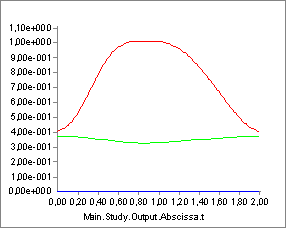
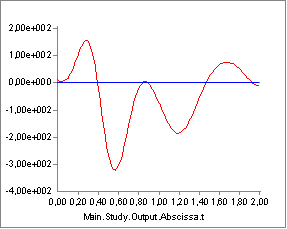

Kinematic Input Validation¶
The picture below shows the thorax position variation over time recorded by digitizing images from a video capture (model curtesy of the Technical University of Vienna) of ergometer rowing. The red curve is the horizontal position, and the green curve is the vertical position. The lateral position remains zero and is the blue curve. It looks very reasonable, and it does not seem to be infested with significant noise.

To find velocities, the system automatically differentiates positional data with respect to time and we get the following:

It still looks reasonable except for a suspicion that the maximum velocity around 12 m/s may be a bit high over such a short distance. The system dfferentiates the velocity function to obtain the accelerations, which subsequently according to the second law of Newton will generate forces:

This graph still looks nice and smooth, but notice the values: The maximum acceleration is around 300 m/s^2 or 30 g. Notice that this is for the thorax and not a distal segment like a hand or a foot. It is not realistic, and it is in fact an artifact produced by the amplification of small errors in the positional signal through the two subsequent differentiations.
If you work with recorded movement data, then it is very important to check that the accelerations are within reasonable limits. The movement is input in inverse dynamics, and if the accelerations are unrealistic, then the muscle and joint forces will be too.
Too high acceerations are usually due to lack of smoothness of the recorded motion data. The solution is often to apply smoothing with a low pass filter to reduce the unrealistic acceleratons.
 Please report it here...
Please report it here...